- Módulo: Administración de Sistemas Operativos
- Título del trabajo
- Componentes del grupo: Alejandro Garcia Yumar
- Curso Académico: 2015/2016
- Fecha de entrega: 7/03/2014
El ejercicio consiste en instalar y utilizar un servicio nfs entre dos windows y dos linux.
Para empezar a trabajar debemos instalar en nuestro servidor el sistema nfs con añadir funciones.
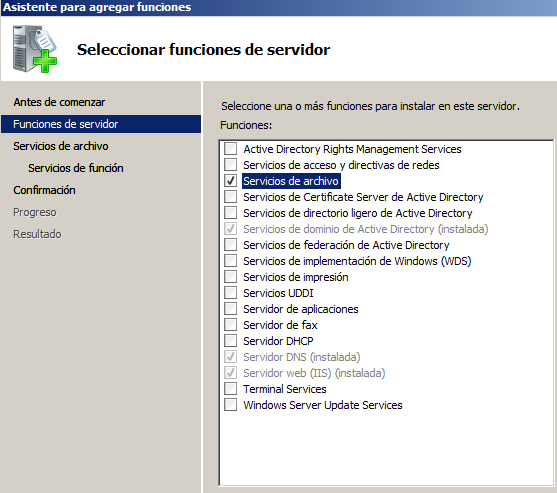 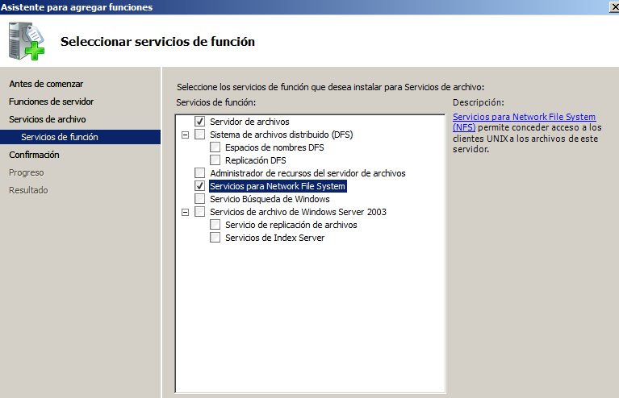 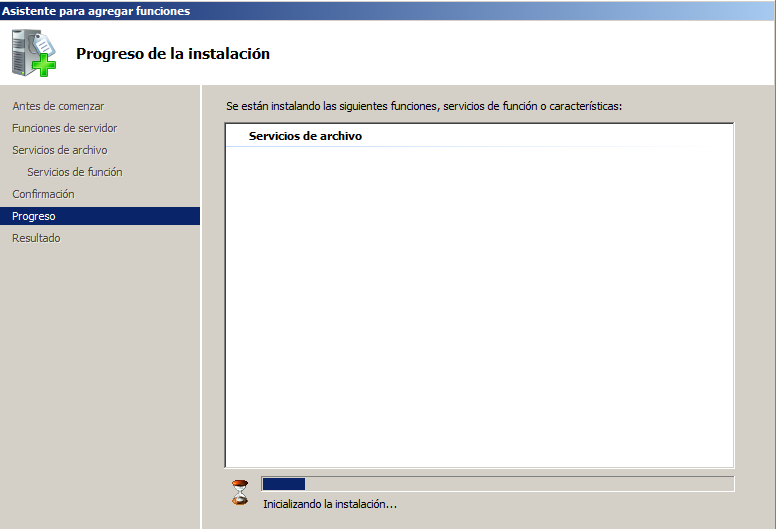Una vez terminada la instalación nos aparecera esta ventana.
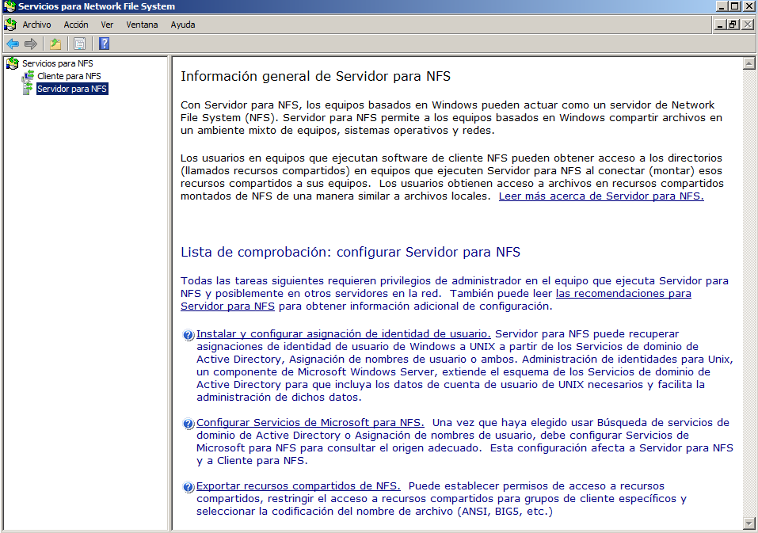Creamos c:\export\public y c:\export\private, y configuramos su uso compartido de nfs en su seccion de propiedades.
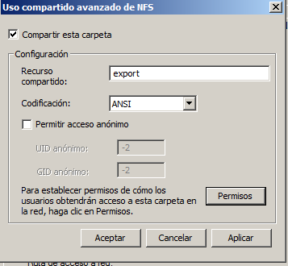 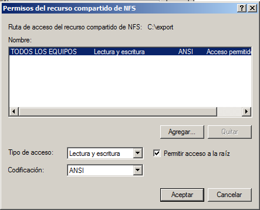 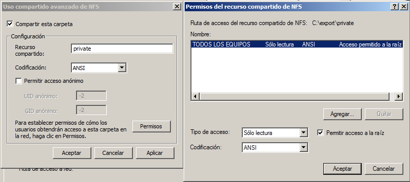Ahora debemos instalar las funcion de cliente nfs en el otro windows, en este caso un windows 7, desde la opcion de añadir programas del windows
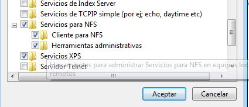Ejecutamos el siguiente comando para iniciarlo.
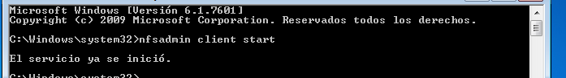Y escribimos los siguientes para montarlos.
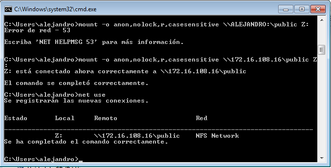Ahora creamos un documento en el servidor y lo podremos modificar en el cliente.
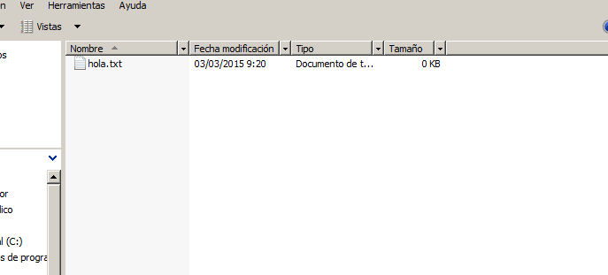En este caso no se pudo visualizar los documentos debidos a que debemos utilizar un windows server 2008 r2, solo pudiendo conectarse a la carpeta.
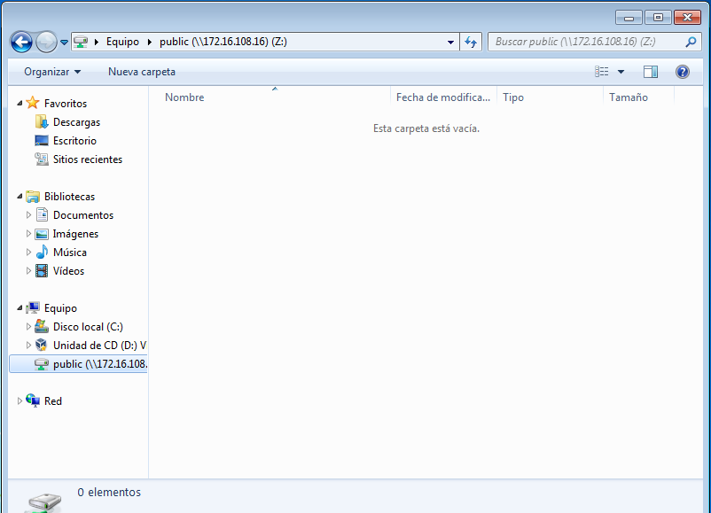Vamos a hacer un proceso parecido, con lo que instalaremos el nfs por comandos, escribiendo apt-get install nfs-common nfs-kernel-server.
Luego de instalarlo debemos crear las carpetas y ejecutar los siguientes comandos para compartirlas por nfs.
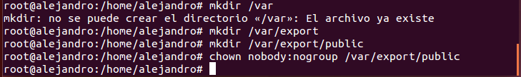Los siguentes comandos los ejecutaremos despues segun convenga para arrancar o parar el servidor.
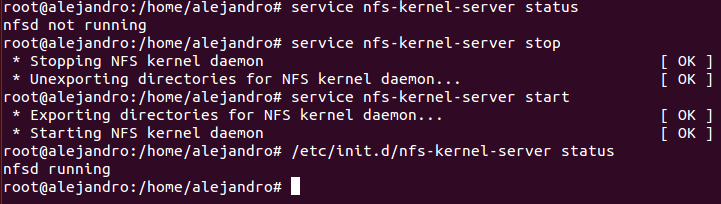Ahora desde el cliente que tenemos configurado con una ip estatica, le intalamos un nmap, si no lo tiene ya, para buscar los recursos que ofrece el servidor.
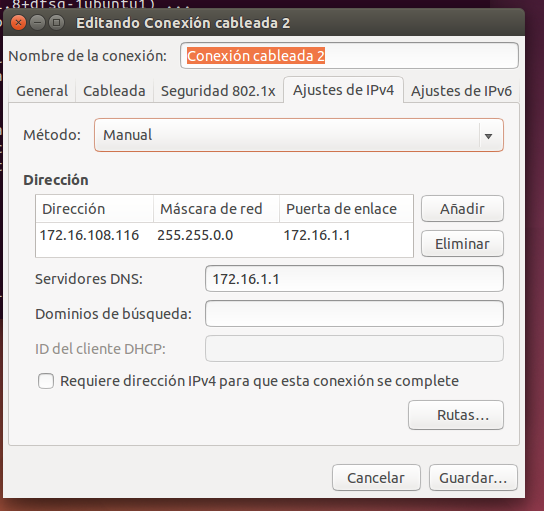 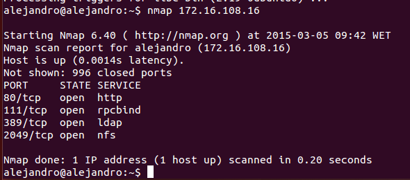Le instalamos el servicio nfs al cliente.
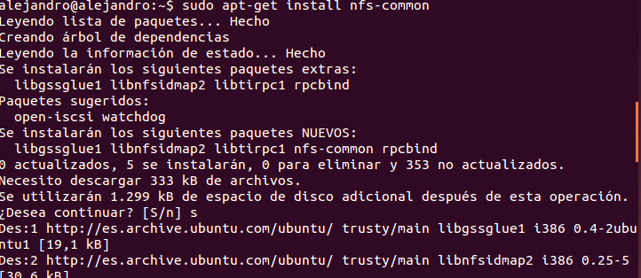Creamos las carpetas donde montaremos las del servidor, y las montamos luego en ellas con los siguentes comandos.
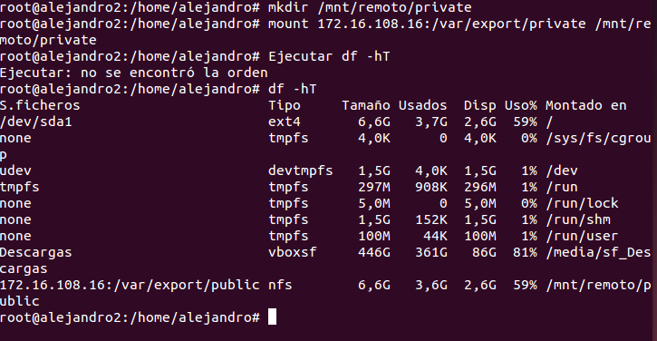Ahora creamos un documento en el servidor y podremos modicarlos en el cliente, como en la imagen.
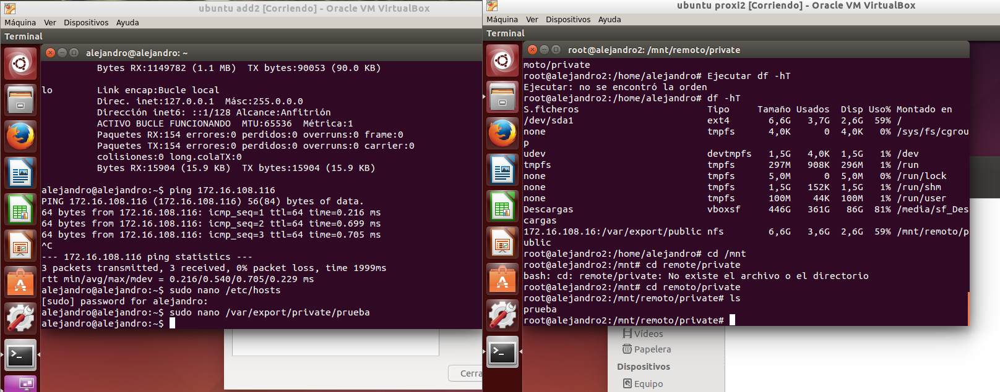 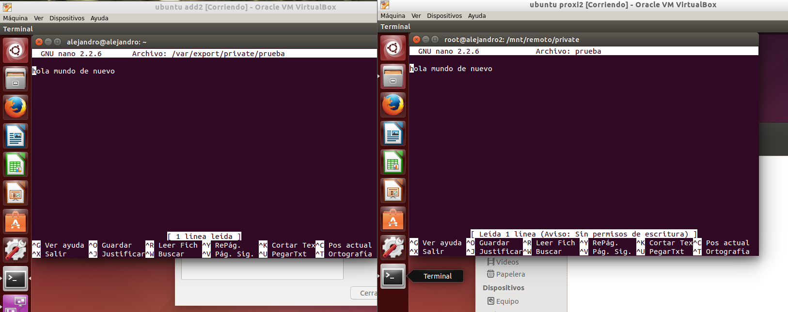